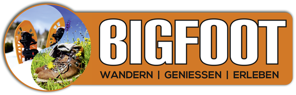

„Nur wo du zu Fuß warst, bist du auch wirklich gewesen.“ (J.W. von Goethe)
Deshalb bieten wir dir geführte Wanderungen durch den wunderschönen Schwarzwald. Erwandere dir sagenhafte Aussichten, atemberaubende Berggipfel und verdiene dir deine Vesperpause in urigen Hütten.
Geh mit uns auf eine geführte Wandertour durch den sommerlichen Schwarzwald. Erklimme Berge und erhol dich an kühlen Flüssen oder verborgenen Bergseen. Lass idr Geschichten und Sagen aus der Umgebung erzählen und erlebe ein Abenteuer, das dir noch lange in Erinnerung bleiben wird.

Sobald der erste Schnee fällt, zeigt sich der Schwarzwald als romantisches Winterwunderland. Eine geführte Wanderung, oder sogar eine Schneeschuhtour, machen jetzt besonders viel Spaß. Wir sorgen natürlich für genügend Gelegenheiten zum Aufwärmen.

Wenn der Winter uns mit besonders viel Schnee beschenkt, sind normale Wanderungen im Schwarzwald nicht mehr möglich. Deshalb haben wir Schneeschuhe um ganze Wandergruppen auszustatten. Wer also für ein ganz besonderes Abenteuer zu haben ist, leiht sich bei uns Schneeschuhe, oder macht eine geführte Schneeschuhtour mit uns.

Wir sind deine zertifizierten Wanderleiter für den Schwarzwald.

Den Schwarzwald kenne ich wie meine Westentasche. Wer mit mir wandern geht, kann sich daher auf neue Pfade und Abenteuer freuen. Geschmückt mit interessanten Geschichten aus dem Schwarzwald.
Ich passe darauf auf, dass auch alle mit Spaß und Freude mithalten können. Mit viel Einfühlungsvermögen und Spaß am zusammensein mit neuen Leute, wird es mit mir sicher nie langweilig.